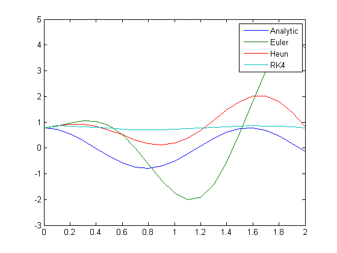
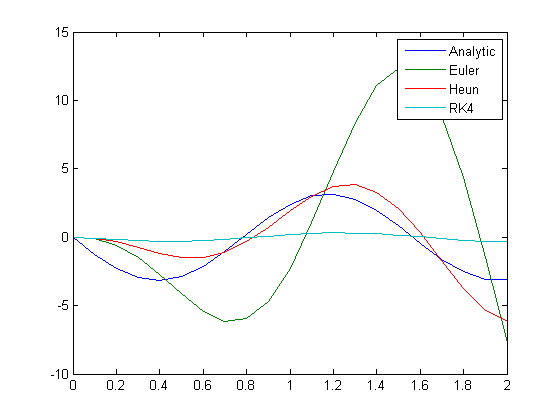
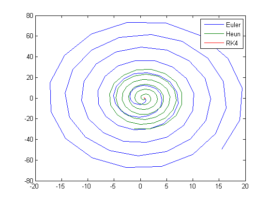

clear;clc
fprintf('---------------PROBLEM 1---------------\n\n')
I = 3.50017;
fprintf('----------Trapezoidal Rule----------\n')
TR_n1 = TrapezoidalRule(@func1, 0, 4, 1)
TR_n1_error = abs((I-TR_n1)/I)
TR_n2 = TrapezoidalRule(@func1, 0, 4, 2)
TR_n2_error = abs((I-TR_n2)/I)
TR_n4 = TrapezoidalRule(@func1, 0, 4, 4)
TR_n4_error = abs((I-TR_n4)/I)
fprintf('\n----------Simpsons 1/3 Rule----------\n')
S13_n1 = Simpsons13(@func1, 0, 4, 2)
S13_n1_error = abs((I-S13_n1)/I)
S13_n4 = Simpsons13(@func1, 0, 4, 4)
S13_n4_error = abs((I-S13_n4)/I)
fprintf('\n----------Simpsons 3/8 Rule----------\n')
S38_n1 = Simpsons38(@func1, 0, 4, 3)
S33_n1_error = abs((I-S38_n1)/I)
fprintf('\n----------Two Point Rule----------\n')
TP = TwoPointRule(@func1, 0, 4)
TP_error = abs((I-TP)/I)
fprintf('\n\n---------------PROBLEM 2---------------\n\n')
i = 1;
for t = 0:0.1:2
Vals(i,:) = ode(t);
time(i) = t;
i = i + 1;
end
fprintf('\n---------- Euler Method----------\n')
EulerValues_2s = EulerMethod(@ode, [pi/4, 0], 0, 2.1, 0.1)
EulerValues_10s = EulerMethod(@ode, [pi/4, 0], 0, 10.1, 0.1)
fprintf('\n---------- Heun Method----------\n')
HeunValues_2s = HeunMethod(@ode, [pi/4, 0], 0, 2.1, 0.1)
HeunValues_10s = HeunMethod(@ode, [pi/4, 0], 0, 10.1, 0.1)
fprintf('\n---------- RK4 Method----------\n')
RK4Values_2s = RK4Method(@ode, [pi/4, 0], 0, 2.1, 0.1)
RK4Values_10s = RK4Method(@ode, [pi/4, 0], 0, 10.1, 0.1)
figure(1)
plot(time',Vals(:,1))
hold all
plot(time',EulerValues_2s(:,1))
hold all
plot(time',HeunValues_2s(:,1))
hold all
plot(time',RK4Values_2s(:,1))
hold all
legend('Analytic','Euler', 'Heun', 'RK4')
hold all
figure(2)
plot(time',Vals(:,2))
hold all
plot(time',EulerValues_2s(:,2))
hold all
plot(time',HeunValues_2s(:,2))
hold all
plot(time',RK4Values_2s(:,2))
hold all
legend('Analytic','Euler', 'Heun', 'RK4')
hold all
figure(3)
plot(EulerValues_10s(:,1),EulerValues_10s(:,2))
hold all
plot(HeunValues_10s(:,1),HeunValues_10s(:,2))
hold all
plot(RK4Values_10s(:,1),RK4Values_10s(:,2))
hold all
legend('Euler', 'Heun', 'RK4')
---------------PROBLEM 1---------------
----------Trapezoidal Rule----------
TR_n1 =
1.9993
TR_n1_error =
0.4288
TR_n2 =
2.9630
TR_n2_error =
0.1535
TR_n4 =
3.3437
TR_n4_error =
0.0447
----------Simpsons 1/3 Rule----------
S13_n1 =
3.2843
S13_n1_error =
0.0617
S13_n4 =
3.4706
S13_n4_error =
0.0085
----------Simpsons 3/8 Rule----------
S38_n1 =
3.4921
S33_n1_error =
0.0023
----------Two Point Rule----------
TP =
3.6275
TP_error =
0.0364
---------------PROBLEM 2---------------
---------- Euler Method----------
EulerValues_2s =
0.7854 0
0.8577 -0.1231
0.9669 -0.5763
1.0514 -1.4588
1.0407 -2.7186
0.8750 -4.1472
0.5252 -5.4139
0.0056 -6.1347
-0.6213 -5.9624
-1.2516 -4.6789
-1.7575 -2.2684
-2.0117 1.0447
-1.9152 4.8065
-1.4223 8.3942
-0.5575 11.1192
0.5796 12.3548
1.8245 11.6672
2.9711 8.9219
3.8057 4.3434
4.1463 -1.4862
3.8790 -7.6971
EulerValues_10s =
0.7854 0
0.8577 -0.1231
0.9669 -0.5763
1.0514 -1.4588
1.0407 -2.7186
0.8750 -4.1472
0.5252 -5.4139
0.0056 -6.1347
-0.6213 -5.9624
-1.2516 -4.6789
-1.7575 -2.2684
-2.0117 1.0447
-1.9152 4.8065
-1.4223 8.3942
-0.5575 11.1192
0.5796 12.3548
1.8245 11.6672
2.9711 8.9219
3.8057 4.3434
4.1463 -1.4862
3.8790 -7.6971
2.9859 -13.2608
1.5572 -17.1601
-0.2146 -18.5722
-2.0600 -17.0313
-3.6734 -12.5411
-4.7635 -5.6126
-5.1053 2.7849
-4.5839 11.3572
-3.2226 18.6842
-1.1883 23.4549
1.2266 24.6989
3.6464 21.9744
5.6701 15.4772
6.9380 6.0472
7.1946 -4.9345
6.3381 -15.7465
4.4461 -24.5966
1.7725 -29.9188
-1.2852 -30.6470
-4.2449 -26.4200
-6.6158 -17.6771
-7.9800 -5.6261
-8.0647 7.9206
-6.7953 20.8173
-4.3162 30.9248
-0.9776 36.4650
2.7136 36.3301
6.1705 30.2956
8.8196 19.0943
10.1954 4.3361
10.0220 -11.7210
8.2657 -26.5155
5.1500 -37.5915
1.1292 -43.0052
-3.1776 -41.6634
-7.0813 -33.5337
-9.9337 -19.6890
-11.2344 -2.1719
-10.7179 16.3055
-8.4054 32.7805
-4.6106 44.5152
0.1009 49.4506
4.9964 46.5644
9.2891 36.0717
12.2654 19.4290
13.4025 -0.8636
12.4600 -21.6365
9.5272 -39.5458
5.0188 -51.6115
-0.3832 -55.7120
-5.8320 -50.9542
-10.4490 -37.8532
-13.4654 -18.2893
-14.3499 4.7594
-12.9013 27.6690
-9.2902 46.7397
-4.0415 58.7932
2.0416 61.7012
8.0000 54.7572
12.8701 38.8279
15.8396 16.2529
16.3824 -9.4966
14.3512 -34.3510
10.0103 -54.2855
4.0032 -65.9714
-2.7427 -67.3310
-9.1589 -57.9024
-14.2051 -38.9522
-17.0377 -13.3109
-17.1507 15.0480
-14.4649 41.6237
-9.3499 62.1020
-2.5750 73.0557
4.8065 72.5164
11.6210 60.3237
16.7610 38.1896
19.3650 9.4623
18.9619 -21.3790
15.5543 -49.4221
---------- Heun Method----------
HeunValues_2s =
0.7854 0
0.8608 -0.0615
0.9123 -0.3497
0.9095 -0.7811
0.8364 -1.2182
0.6959 -1.5017
0.5111 -1.4906
0.3215 -1.0993
0.1751 -0.3257
0.1176 0.7387
0.1823 1.9184
0.3800 2.9823
0.6950 3.6880
1.0841 3.8315
1.4832 3.2943
1.8172 2.0776
2.0143 0.3152
2.0200 -1.7379
1.8097 -3.7427
1.3962 -5.3312
0.8310 -6.1737
HeunValues_10s =
0.7854 0
0.8608 -0.0615
0.9123 -0.3497
0.9095 -0.7811
0.8364 -1.2182
0.6959 -1.5017
0.5111 -1.4906
0.3215 -1.0993
0.1751 -0.3257
0.1176 0.7387
0.1823 1.9184
0.3800 2.9823
0.6950 3.6880
1.0841 3.8315
1.4832 3.2943
1.8172 2.0776
2.0143 0.3152
2.0200 -1.7379
1.8097 -3.7427
1.3962 -5.3312
0.8310 -6.1737
0.1985 -6.0426
-0.3968 -4.8640
-0.8473 -2.7443
-1.0617 0.0337
-0.9825 3.0477
-0.5986 5.7991
0.0485 7.7962
0.8689 8.6404
1.7361 8.1027
2.5066 6.1752
3.0439 3.0868
3.2417 -0.7202
3.0450 -4.6534
2.4619 -8.0620
1.5663 -10.3445
0.4891 -11.0537
-0.6008 -9.9812
-1.5230 -7.2058
-2.1154 -3.0952
-2.2625 1.7401
-1.9169 6.5378
-1.1111 10.5036
0.0447 12.9424
1.3768 13.3792
2.6741 11.6487
3.7218 7.9361
4.3366 2.7629
4.3987 -3.0861
3.8744 -8.6808
2.8249 -13.0941
1.4004 -15.5552
-0.1812 -15.5832
-1.6675 -13.0775
-2.8123 -8.3493
-3.4156 -2.0861
-3.3590 4.7480
-2.6275 11.0598
-1.3162 15.8024
0.3821 18.1483
2.2043 17.6328
3.8583 14.2421
5.0696 8.4312
5.6269 1.0644
5.4184 -6.7123
4.4534 -13.6497
2.8650 -18.5957
0.8913 -20.6865
-1.1593 -19.4961
-2.9568 -15.1192
-4.2025 -8.1705
-4.6786 0.2994
-4.2859 8.9629
-3.0634 16.4234
-1.1857 21.4403
1.0615 23.1349
3.3249 21.1429
5.2390 15.6876
6.4854 7.5590
6.8451 -1.9994
6.2374 -11.4806
4.7356 -19.3517
2.5598 -24.3016
0.0445 -25.4590
-2.4128 -22.5442
-4.4144 -15.9289
-5.6265 -6.5915
-5.8349 4.0266
-4.9827 14.2436
-3.1827 22.4034
-0.7033 27.1441
2.0712 27.6248
4.7006 23.6730
6.7581 15.8273
7.9000 5.2661
7.9227 -6.3688
6.7985 -17.2276
4.6842 -25.5460
1.8993 -29.9324
-1.1220 -29.5996
---------- RK4 Method----------
RK4Values_2s =
0.7854 0
0.8618 -0.0624
0.8497 -0.1772
0.8273 -0.2639
0.7983 -0.3087
0.7672 -0.3044
0.7391 -0.2518
0.7182 -0.1592
0.7081 -0.0413
0.7102 0.0832
0.7243 0.1945
0.7480 0.2748
0.7778 0.3115
0.8087 0.2988
0.8359 0.2385
0.8551 0.1404
0.8633 0.0200
0.8590 -0.1036
0.8431 -0.2108
0.8180 -0.2844
0.7877 -0.3129
RK4Values_10s =
0.7854 0
0.8618 -0.0624
0.8497 -0.1772
0.8273 -0.2639
0.7983 -0.3087
0.7672 -0.3044
0.7391 -0.2518
0.7182 -0.1592
0.7081 -0.0413
0.7102 0.0832
0.7243 0.1945
0.7480 0.2748
0.7778 0.3115
0.8087 0.2988
0.8359 0.2385
0.8551 0.1404
0.8633 0.0200
0.8590 -0.1036
0.8431 -0.2108
0.8180 -0.2844
0.7877 -0.3129
0.7571 -0.2917
0.7309 -0.2241
0.7134 -0.1209
0.7074 0.0014
0.7137 0.1236
0.7314 0.2261
0.7577 0.2927
0.7884 0.3128
0.8186 0.2832
0.8436 0.2086
0.8592 0.1009
0.8632 -0.0228
0.8548 -0.1429
0.8354 -0.2404
0.8080 -0.2996
0.7771 -0.3112
0.7474 -0.2734
0.7238 -0.1922
0.7100 -0.0804
0.7082 0.0441
0.7186 0.1616
0.7396 0.2535
0.7679 0.3051
0.7990 0.3082
0.8279 0.2624
0.8501 0.1749
0.8620 0.0596
0.8617 -0.0652
0.8493 -0.1796
0.8267 -0.2655
0.7976 -0.3092
0.7666 -0.3038
0.7385 -0.2501
0.7179 -0.1567
0.7080 -0.0384
0.7104 0.0859
0.7247 0.1967
0.7487 0.2762
0.7785 0.3118
0.8094 0.2979
0.8365 0.2367
0.8554 0.1378
0.8633 0.0171
0.8588 -0.1063
0.8426 -0.2129
0.8173 -0.2856
0.7870 -0.3130
0.7564 -0.2906
0.7304 -0.2221
0.7132 -0.1183
0.7074 0.0043
0.7140 0.1262
0.7320 0.2280
0.7584 0.2937
0.7891 0.3127
0.8193 0.2820
0.8440 0.2065
0.8595 0.0982
0.8632 -0.0257
0.8545 -0.1455
0.8348 -0.2422
0.8073 -0.3004
0.7764 -0.3109
0.7468 -0.2720
0.7234 -0.1900
0.7098 -0.0777
0.7083 0.0469
0.7190 0.1641
0.7402 0.2552
0.7686 0.3057
0.7997 0.3077
0.8285 0.2608
0.8505 0.1725
0.8621 0.0568
0.8616 -0.0680
0.8489 -0.1819
0.8261 -0.2670
0.7969 -0.3096
0.7659 -0.3031
  